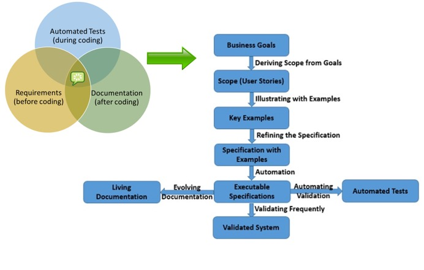
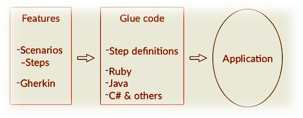

What is Behavior Driven Development or BDD?
BDD is an approach for building a shared understanding on what software to build by working through examples and use cases.It helps you describe what you want the system to do by talking through example behaviors. Work from the outside-in to implement those behaviors using the examples to validate what’s being built.
Key Benefits of BDD?
BDD is an abstraction of TDD (Test Driven Development). They both essentially follow the same practices, but, BDD focuses more on the behavior of application, rather than the implementation, using a language where stakeholders can participate and collaborate.
Given below are some key benefits:
Cucumber based BDD Workflow

Gherkin: Gherkin is the language that Cucumber understands. It is a Business Readable, Domain Specific Language that lets you describe software's behavior without detailing how that behavior is implemented. Gherkin serves two purposes — documentation and automated tests.
The business facing parts of a Cucumber test suite , known as feature files must be written following the Gherkin syntax. 
BDD-Cucumber Example using the Gherkin Syntax
# feature/search_product.feature
Feature: Search Product
As a user I want to be able to search products
and see listing based on the search criteria
Scenario: User searches for a product on the Amazon site
When user searches for a product
Then user receives a listing of matching products
To go places and do things that have never been done before – that’s what living is all about.
- Michael Collins, flew on Gemini 10 and Apollo 11
{kind=link}
{kind=link}
{kind=link}
{kind=link}